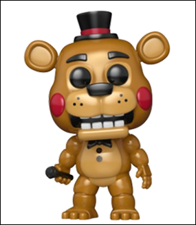

Toy Freddy Collectible Figure (FNAF 2) The leader of the new show! This detailed Toy Freddy figure features his glossy brown finish, rosy red cheeks, signature black top hat, bowtie, and microphone accessory. An essential addition to any Five Nights at Freddy's collection!
- Height: 5 inches (~12 cm)
- Material: High-quality PVC / Vinyl
- Includes: Toy Freddy figure + Microphone accessory